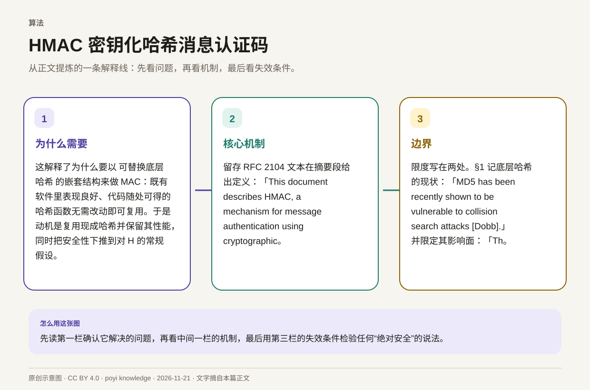
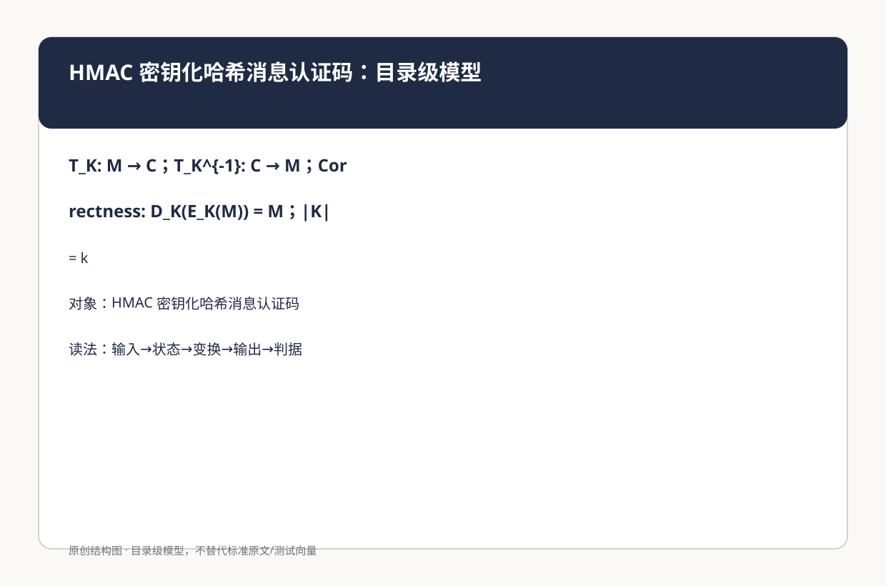

原理与机制
算法：HMAC 密钥化哈希认证码（Hash-based Message Authentication Code）。留存 RFC 2104 文本在摘要段给出定义：「This document describes HMAC, a mechanism for message authentication using cryptographic hash functions.」其下一句交代它与密钥和哈希的结合方式：「HMAC can be used with any iterative cryptographic hash function, e.g., MD5, SHA-1, in combination with a secret shared key.」两句都在文首 Abstract 段（本副本报为 front）。原理骨架即此：以迭代型哈希函数为构件、配一把共享秘密密钥，产出一个消息认证码；强度归属见同一段的「The cryptographic strength of HMAC depends on the properties of the underlying hash function.」
§2 把构造写成可执行的七步。先定义两个定串：「ipad = the byte 0x36 repeated B times」与「opad = the byte 0x5C repeated B times.」（两行明文各占一行，0x5C 按原文大小写书写），随后一行给出整体式「H(K XOR opad, H(K XOR ipad, text))」。步骤按原文编号为：「(1) append zeros to the end of K to create a B byte string」、「(4) apply H to the stream generated in step (3)」、「(5) XOR (bitwise exclusive-OR) the B byte string computed in」（该行到此为止，「step (1) with opad」在下一行，故只引至此）、「(7) apply H to the stream generated in step (6) and output」。长密钥规则同段印作「Applications that use keys longer…than B bytes will first hash the key using H and then use the…resultant L byte string as the actual key to HMAC.」（该句被硬回车切成三行，此处按行分段引用，省略号即换行处）。逐步算例（Test Case 2，复算记在 hmac-calc-construction-steps）：密钥 4a656665 按步骤 (1) 补零成 64 字节的分组键；步骤 (2) 与 ipad 异或，得到以 7c535053 开头、其后 60 字节全为 36 的串；步骤 (5) 与 opad 异或，得到以 16393a39 开头、其后 60 字节全为 5c 的串；步骤 (4) 的中间摘要长 32 字节；步骤 (7) 的输出为 5bdcc146bf60754e6a042426089575c75a003f089d2739839dec58b964ec3843，与留存件 RFC 4231 §4.3 第 203-204 行所印一致。中间量是本批次按上述步骤算出的，留存件只印最终值。

为什么重要
§1 说明其构造取向：「This document specifies HMAC using a generic cryptographic hash function (denoted by H).」并紧跟实例化要求：「Specific instantiations of HMAC need to define a particular hash function.」——文件定义的是与具体哈希无关的通用构造，实例化时才选定哈希。这解释了为什么要以可替换底层哈希的嵌套结构来做 MAC：既有软件里表现良好、代码随处可得的哈希函数无需改动即可复用。摘要段那句把强度前提也归到底层哈希：「The cryptographic strength of HMAC depends on the properties of the underlying hash function.」（front）。于是动机是复用现成哈希并保留其性能，同时把安全性下推到对 H 的常规假设。
应用与实例
使用条件散在编号小节，措辞有 must 级也有 recommend 级。§3 对密钥的取法是祈使式陈述：「Keys need to be chosen at random (or using a cryptographically strong pseudo-random generator seeded with a random seed), and periodically refreshed.」——密钥须随机选择并定期刷新。§5 对截断输出给的是 recommend：「We recommend that the output length t be not less than half the length of the hash output (to match the birthday attack bound) and not less than 80 bits」即截断后的长度 t 建议不小于哈希输出的一半且不少于 80 位。用途因此是把 HMAC 套在某一具体哈希上作消息认证，并对密钥管理与输出截断给出上述两级指引；该条目据的是 RFC 2104 文本，而非目录行的首要引用 FIPS 198-1。留存 RFC 4231 §4.1 交代这批测试向量的地位：「The test vectors in this document have been cross-verified by three」接「independent implementations.」——同一句被硬回车切成两行，故分两段引。取值形式由一句说明：「Keys, data, and digests are provided in hex.」§4.2 至 §4.8 的七个用例各自印一行说明其覆盖面：密钥短于输出长度的「Test with a key shorter than the length of the HMAC output.」、密钥与数据合计长度超过 64 字节的「Test with a combined length of key and data that is larger than 64」接「bytes (= block-size of SHA-224 and SHA-256).」、输出截断的「Test with a truncation of output to 128 bits.」、以及密钥超过 128 字节的「Test with a key larger than 128 bytes (= block-size of SHA-384 and」接「SHA-512).」。§3.2 另印一句「element may specify the truncated length of the scheme output.」即截断后的长度由该元素指定。该条目复算的期望值就是这些明文所印的值。七个用例的密钥、数据与四种摘要都是逐值可定位的：本批次把从留存件读取的每个值连同其行号存入 hmac-vectors.json（提取器读的是 build/corpora.json 为源标识 rfc4231 登记的那份文件），并在 artefacts 里记下两处版式事实：Test Case 3 的密钥标签印作 Key 而没有其余六个用例都带的等号；Test Case 5 的四个摘要只印 16 字节，因为该用例把输出截断到 128 位。复算结果记在 calculations 中：28 个明文摘要全部由按 §2 步骤写出的构造复现，另与 Node.js 自带实现逐一对齐。本批次的复算覆盖：7 个用例乘 4 种摘要共 28 个明文摘要，全部由按 §2 步骤写出的实现复现（hmac-calc-rfc4231-vectors）；Test Case 5 的 16 字节输出与截断规则相对（hmac-calc-truncation-rule）；Test Case 6、7 的 131 字节密钥走 H(K) 分支且与以 H(K) 为密钥的结果相等（hmac-calc-longkey-rule）；另有 140 组长度组合与 Node.js 自带实现逐一对齐（hmac-calc-oracle-agreement）。这些一致性与断言的对应关系记在该档案的 calculations 与 verification-results 中。

边界与攻击面
限度写在两处。§1 记底层哈希的现状：「MD5 has been recently shown to be vulnerable to collision search attacks [Dobb].」并限定其影响面：「This attack and other currently known weaknesses of MD5 do not compromise the use of MD5 within HMAC as specified in this document (see [Dobb]); however, SHA-1 appears to be a cryptographically stronger function.」——已知的 MD5 碰撞攻击当时尚未危及 HMAC 内的 MD5 使用，但 SHA-1 被评述为更强。§6 给出理论上的最强攻击（该句在原文里紧跟带 ASCII 引号的 birthday attack 一词，此处只引到 H 为止）：「The strongest attack known against HMAC is based on the frequency of collisions for the hash function H」即攻击面被归结为底层 H 的碰撞频率。两条合说：HMAC 的安全性随所选哈希的碰撞抗力而变，MD5 这类构件是其明文点名的弱点来源。
历史与背景
门面按留存文本连读：标题行印 HMAC: Keyed-Hashing for Message Authentication，作者行 Krawczyk、Bellare、Canetti，头部印 Request for Comments: 2104 与 Category: Informational（头部行复述于引号外）。其 Status of This Memo 段三句为：「This memo provides information for the Internet community.」 「This memo does not specify an Internet standard of any kind.」 「Distribution of this memo is unlimited.」——信息类文档，不规定任何因特网标准。版本口径分歧在此记录：本留存文件的日期行印 February 1997，而目录行把 RFC 2104 记作 RFC 2104(1999) 并将 FIPS 198-1(2008) 列为首要引用；该条目所有断言均以留存 RFC 2104 文本为准，日期从文本所印。
逐步示例与核验
复算示例
取标准或公开测试向量中的一组参数，按“输入—执行—输出”记录：先写出该条目的形式式 (T=\mathrm{MAC}_K(M))；再按规范顺序执行每一步，最后把输出与独立实现或标准向量逐字节对照。若没有可引用的数值向量，就只记录结构步骤，不伪造输出。
参考出处
- Wikipedia search entry for HMAC 密钥化哈希认证码. https://zh.wikipedia.org/w/index.php?search=HMAC%20%E5%AF%86%E9%92%A5%E5%8C%96%E5%93%88%E5%B8%8C%E8%AE%A4%E8%AF%81%E7%A0%81
- Handbook of Applied Cryptography (Menezes, van Oorschot, Vanstone). https://www.cacr.math.uwaterloo.ca/hac/